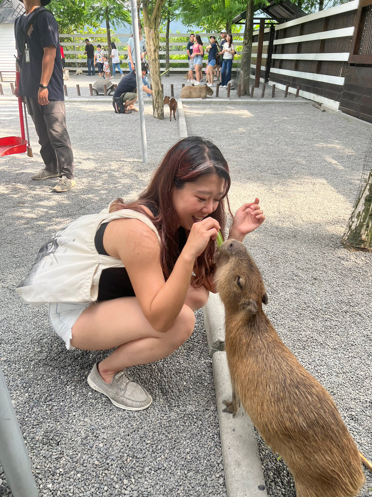
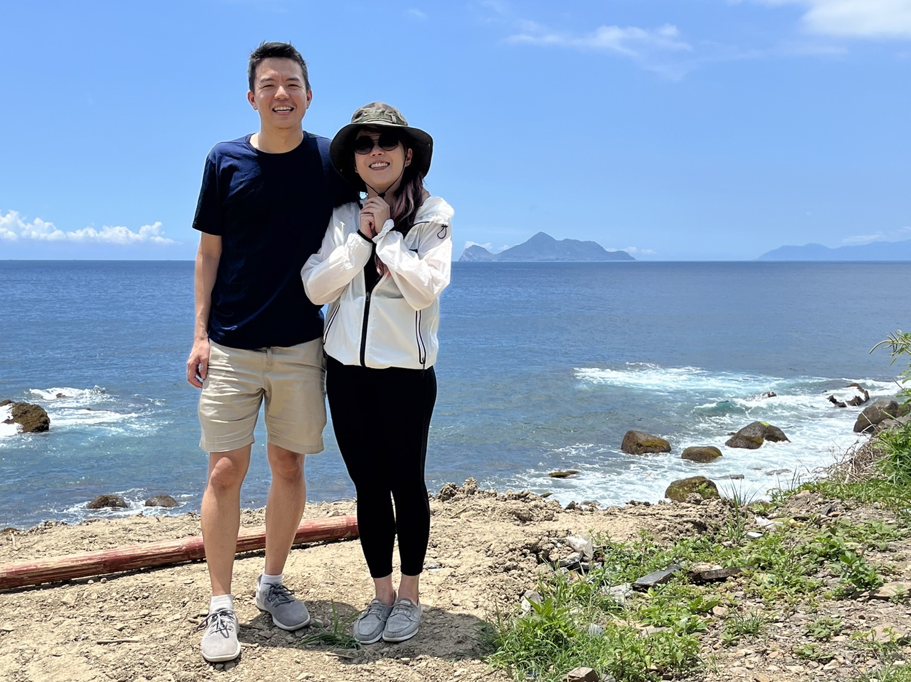
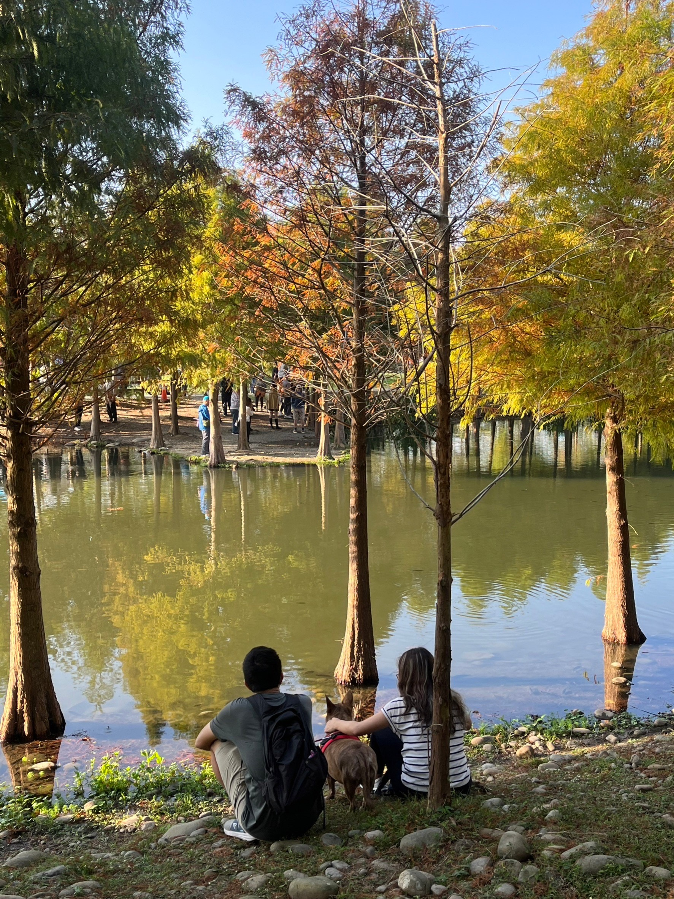

To Our Dear Jeffrey! aka the Most Lovely Goofball King!
Greetings! I'm Xiaoxiong and I'm your host today. The story all started with a weird American dude who loves tea and hates cheese...
Ta-Da!!
Hey not you Cilantro! You're a cute penguin who loves cucumber and hates garlic. And you're here too early!
Whoops my apologies.I guess I'm too excited!
Ok so as I was saying...Ann told me that they met on a dating app called CMB. I immediately dislike him when I heard that he doesn't like cheese.
Look at this tea lover!
He seems quite gentleman when I first met him personally.
He drew me a bunch of I-don't-know-if-they're-my-portraits
drawings on sticky notes that Ann found them very cute.
Hands down I prefer the left one. Who is that on the right hand side?!
Good efforts on him tho! Look how struggling he was hahaha.
Ann had an accident in early 2023 and bumped herself in her head. I was told that this dude got there for Ann right away instead of running away.He has been taking care of her afterwards which was really amazing.
I started to believe in and like this dude.
But he has been taking my spot on bed. Not cool!
TAAAA-DAAA!!! Cilantro comes to the rescue! That's why Jeffrey brought me in. So that we could work together to win you and Ann's hearts! ...Or perhaps he just thinks that I'm cute. Meh, Who cares.
Look at us Xiaoxiong. We look great, don't we??
What I love about us all is that we are like a family. We had fun together. And more importantly, we take care of each other, support each other, and will be there whenever anyone hits obstacle or feels down.
Familyyyyyyyyyy
Exactly! I had this conversation with Ann the other day too. We also think that we wouldn't have been here or wouldn't have grown much if Jeffrey is not here. Oh and would've missed out so much fun without him. Such as...
What were we learning then?...How to grow a cucumber? Woooooo
No Cilantro! we're learning how to code and you weren't paying attention!
Ok here are the fun parts. Remember Ann told us that she and Jeffrey had a blast in tons of places?
Feb.,2023 / JiaoXi
That's when we know how much Jeffrey loves hotspring.
Do you think he enjoyed the trip?
I don't know. He gave something a thumbs down.
See!
Jun.,2023 / YiLan
Celebrating Ann's mom's birthday and going to see Capybara!

Capybara LOVES Ann!
July,2023 / Fulong
Where Jeffery got so tanned hahahahaha.

And that's the Turtle Island in the back!
Aug.,2023 / JiaoXi
Wait what, again??
Yup! Told ya Jeffrey LOVES hotspring.
Oct., 2023 / Japan
I know that's Senso-ji, the oldest temple in Tokyo!
Tokyo Skytree in the back!
I love the view from the Tokyo Skytree. It's so cool that the Tokyo Skytree is also a broadcasting tower.
Oh yeah. And the view from Tokyo Tower is fantastic too!
Tea tasting is surprisingly so much fun.
Never thought about making sushi by myself. But that was so cool. Ann said she enjoyed it a lot!
Visting the Cat Village and Pingxi.
While Jeffrey was busy at high-fiving a fake cat.
Or busy at fighting with a fake tiger.
They're celebrating Ann's birthday!

Dec., 2023 / Dashi
Where Jeffrey trying his best to friend Tiger.
Tiger still thinks he's suspicious tho.
Dec., 2023 / Banqiao
Lovely Christmas day where Somebody kept playing cute.
Jan., 2024 / SongYan
It's a place that people shouldn't go unless there's Snoopy special exhibitions.
Here's another one of us Cilantro! Look, we had fun with Jeffrey!
Weeeee
We have been working on something special together for him for his birthday.
Yea we've thought carefully about what he loves and we basically included everything except garlic.
Heya! I'm new to this family. And it's very likely that I'm gonna become Jeffrey's second favorite because apparently he's going to name me Garlic! I don't know. We'll see! Anywayyyyyy...key point being....
HAPPY BIRTHDAY JEFFREY!!
WE LOVE YOU AND WE HOPE YOU LIKE EVERYTHING WE HAVE FOR YOU!!!